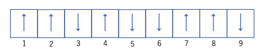

Lec01
概要
原子の振動のことをフォノンと呼んでいる．
温度を上げる→フォノンの数が増えていく→電気抵抗が上がる．
金属と半導体では上の振る舞いが逆になる．
統計力学の目標は，多体系の解析と，熱力学の復習．
統計学における様々な過程や原理
アンサンブル とは，巨視的に同じ条件下にある力学的に同じ系を無数に集めた仮想的な集団のことである
エルゴード仮説 とは，平衡状態にある物理量の時間積分の平均は，ある時刻における多数の測定値の平均である，アンサンブル平均は一致するという仮定である．
| 集団名 | 状態 | 重要な変数 | 大事なエネルギー |
|---|---|---|---|
| ミクロカノニカルアンサンブル | 孤立系 | 状態数\(W\) | \(S=k_b\ln W\) |
| カノニカルアンサンブル | 閉鎖系 | 分配関数\(Z\) | ヘルムホルツエネルギー\(F=-\frac{1}{\beta}\ln Z\) |
| グランドカノニカルアンサンブル | 自由系 | 大分配関数\(\Xi\) | 大分散エネルギー\(J=-\frac{1}{\beta}\ln \Xi\) |
ただし，\(\beta=\frac{1}{k_BT}\)
等重率の原理 とは，\(N,V,E\) で指定された巨視状態に対応するどの微視的状態をとっても，それがアンサンブル中に現れる確率は等しい．
磁気モーメントの略記法

上のような状態のことを次のように書く．
\[\uparrow_1 \uparrow_2 \downarrow_3 \uparrow_4 \downarrow_5 \downarrow_6 \uparrow_7 \uparrow_8 \downarrow_9\]
矢印に対しては単純な乗算を定義できる．また次の式を母関数と呼ぶ
\[\prod_i(\uparrow_i \downarrow_i)\]
この値の数え上げ，つまり状態の数は\(2^N\)ある．
Check Point
統計力学とは？
エントロピーなどの状態量にミクロな視点からの定義を行い，状態量の関係である状態方程式をミクロな視点から導出する学問
エルゴード仮説とは？
平衡状態にある物理量の時間積分の平均は，ある時刻におけるアンサンブル平均は一致する